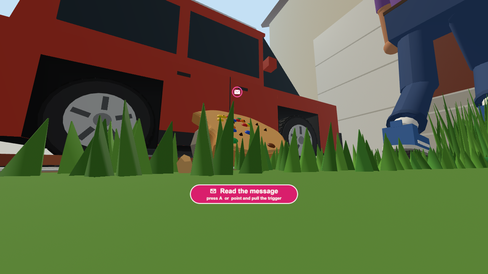

Exit VR 시안 (수정): 흰 테두리 · 더 위쪽 · 더 오른쪽 (헤드셋 안)

✉ Read the message
point at ✉ and pull the trigger · or press A / X
Exit VR
더 위·더 오른쪽 · 흰 테두리 · 고개를 돌려도 늘 이 자리
Exit VR
평소: 반투명 검정 바탕 + 흰 테두리 + 흰 굵은 글자 "Exit VR"
Exit VR
컨트롤러 선이 닿으면 분홍 → 방아쇠를 당기면 헤드셋 모드가 끝나고 컴퓨터(2D) 화면으로 돌아감
· 걸을 때, 카드를 읽을 때, 언제나 보임 (선이 안 보일 때도 버튼은 늘 있음)
· 색·글꼴은 헤드셋 안 "Enter VR" 버튼 스크린샷을 받으면 그대로 맞춤
· 지금 시야 오른쪽 위의 "VR" 표시 버튼은 이 버튼으로 바뀜. 나머지는 그대로